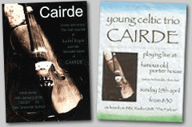
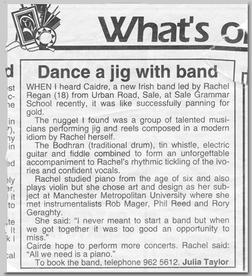

This website was designed by www.DuckWhistle.co.uk
design and computing services in south Manchester
What is CAIRDE?
Cairde were a group of four young, talented musicians from Manchester, UK. They formed in October 1999 to play their own modern songs with an Irish flavour, and traditional folk music. Appearances included live on BBC Radio GMR (now BBC Radio Manchester) and Granada Tonight (now Granada Reports).
The word Cairde, roughly pronounced ‘corr-ja’, is Irish (Gaelic) for friends.
Who was in the band?
Rachel — piano, vocals
Also plays
— piano-accordion, guitar, bodhrán, fiddle
Rachel began playing the piano at the age of six, and rarely a day went by when she didn’t have a ‘tinkle on the ivories.’ She went on to learn violin and guitar classically, before trying folk styles in her early teens. She formed Cairde while studying Art and Design at university, after meeting Rob and Rory on the same course. Rachel, who has two sisters, wrote most of the original songs that Cairde played.
Rob — guitar, vocals
Also plays
— mandolin, bodhrán, piano, percussion
Rob has played electric and acoustic guitar in many styles of music and has been in many bands, but Cairde was his sole settlement for a few years. Rob plays music with a freedom not seen from classically trained artists. He quickly picked up the mandolin after joining the band, making the sound Cairde can make more diverse. Rob, who has one sister, co-wrote many of the band’s original pieces.
Phil — whistles, bodhrán
Also plays
— vocals, piano, percussion, recorder
Phil has had an unusual musical upbringing. He first casually played keyboard at six years old, seriously learned recorder from eight, then started singing at sixteen. Along the way, the tin whistle, ocarina and percussion joined his bandwagon. Since joining Cairde after performing in a school concert with Rachel, he picked up bodhrán and low whistle. The youngest member of the band, he and Rob usually organised the technical setup at gigs.
Rory — fiddle
Also plays
— guitar, bodhrán, tin whistle
Rory has had strong musical influences from birth, stemming partly from his Irish family. He can adapt his fiddle playing to just about any mood or stlye, so is rarely seen on other instruments. A member of many bands over the years, including céilí. Rory provided the band with traditional tunes and experience, yet still enjoys the original music they make. He followed on from the band by playing in Spain, so later Cairde gigs were as a trio or with another fiddler.
The above photo taken on 17 March 2000 at Sale Excelsior Club, Manchester.
From left to right: Rachel, Rob, Phil and Rory.
Where did they play?
The band played in pubs, clubs and schools in south and central Manchester, such as Thirsty Scholar (city centre), Old Plough (Ashton-On-Mersey), Famous Old Porterhouse (Altrincham) and Sale Excelsior Club (Sale), the last of which was the venue for recording their TV interview for Granada Reports. Cairde's radio performance was recorded and broadcast live from the BBC studios on Oxford Road, Manchester.
They made their demo disc in a city centre digital studio, and made numerous home recordings. Hopefully some of these will make their way onto this website soon.
Where are they now?
As with all bands, life happens and people move on. Cairde was no exception. Rachel moved to Ireland and has travelled from Canada to Australia since. Rory has lived in Spain, Ireland and USA, and both of them have taken music with them.
Rob and Phil formed a new band The Rossoneri, in a similar vein to Cairde. Find out more on The Rossoneri’s website, specifically the history article including more detail on Cairde.
Rachel worked on original material to make her first album, launched in 2007 in Cork, Ireland. She has a MySpace site dedicated to it, with sample tracks to listen to.
Media clips
Newspapers
Clip from local paper, February 2000.

Radio
Below is an excerpt from the performance on BBC GMR, broadcast live on 4 March 2000.
Television
Below is the performance on Granada Tonight, broadcast 16 March 2000 (YouTube).
Links
- History of Cairde and The Rossoneri — article written June 2006
- Rachel Regan — follow-on act for Rachel
- The Rossoneri — follow-on band for Rob and Phil
- Celtic Vibes — follow-on band for Phil
- Midnight Mafia — follow-on band for Rob
- EXR Music Services — rehearsal studios and collective run with Phil
- Duck Whistle — design of this website by Phil